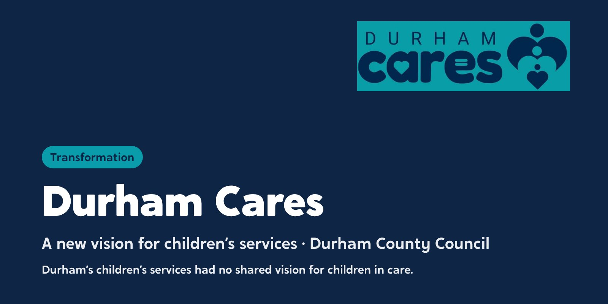
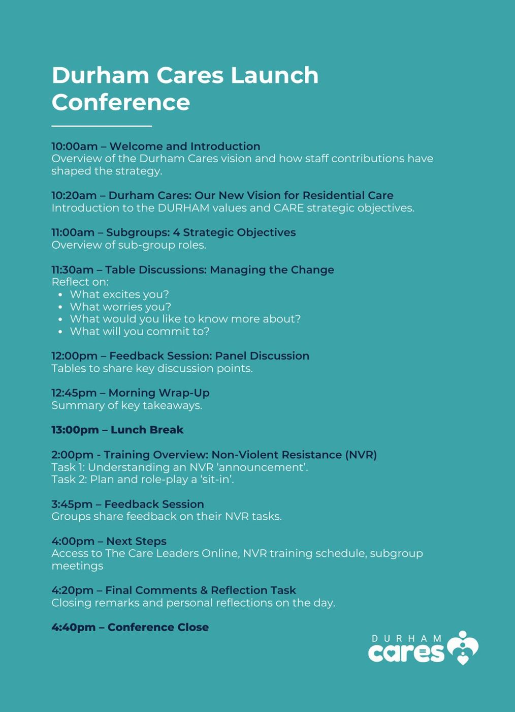
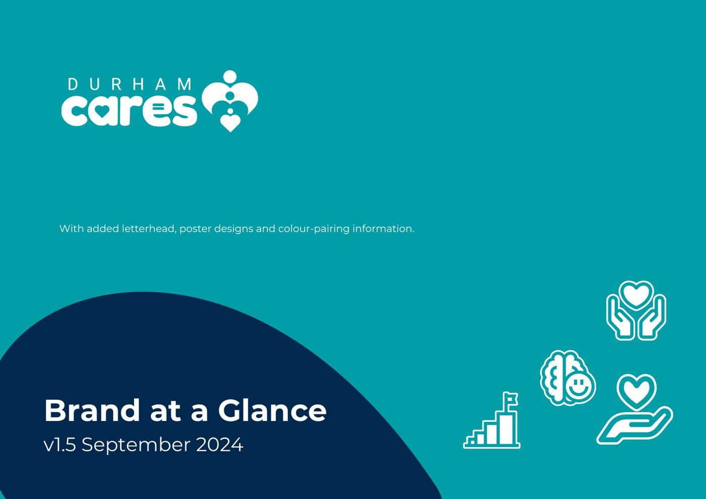
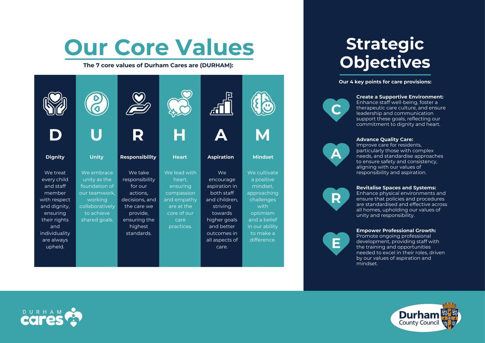

Durham County Council: a new vision for children’s services, built from the ground up
Durham’s children’s services had no shared vision for children in care. Durham Cares is the council’s answer: a vision co-designed with the people who will live it, piloted in residential care and now extending across children’s social care.

The starting point
Durham had no overarching vision for children in care. The council wanted one that shaped how it acts as a corporate parent, and that staff would recognise as theirs. It chose to start where the need was greatest: residential care, where homes were losing staff, applying policies differently from home to home, and facing a need to shift towards a more therapeutic way of caring.
What we did
Durham Cares was designed to roll out in three stages.
- Stage 1Residential care2024. A three-year strategy for Durham’s children’s homes, built with 105 residential staff through a survey, interviews and four workshops
- Stage 2Children’s social care2026. Consultation with eight teams across children’s social care and three senior leaders, to extend Durham Cares beyond residential care
- Stage 3The whole councilFrom 2027. The council adopts the vision, changing how corporate parenting is understood and delivered across Durham
Stage 1: residential care. We used upside-down management: staff named the problems, then worked with us on the solutions. Those solutions went to senior leaders, who agreed around 95% of them and gave a clear reason for every one they didn’t. The result was a vision, six values (DURHAM: Dignity, Unity, Responsibility, Heart, Aspiration and Mindset), four objectives (CARE: Create a supportive environment, Advance quality care, Revitalise spaces and systems, Empower professional growth), a detailed action plan and a three-year training plan, benchmarked against models including No Wrong Door, ARC, ATIC and HOMES.
Stage 2: children’s social care. In March and April 2026 we consulted the fostering service, home finding, children in care, connected carers, adoption, the unaccompanied asylum-seeking children team and leaving care, plus a strategic overview with senior leaders. We didn’t arrive with answers. We asked every team what was working, what was getting in the way, and what would need to change for them to do their best work. The findings became recommendations in three tiers, from quick wins in the first three months to long-term priorities, with an action plan to deliver them.
Communications. We also built a Durham Cares communication strategy with the council’s communications team, replacing long monthly newsletters with shorter content that’s easier to share, and designing the materials to carry the vision: newsletters, posters, roller banners and more.
A decision about young people
In the first stage we chose not to ask young people about restraint and staff stress without a safe framework in place, because it risked distress or leaving them feeling to blame. Instead, the strategy commits Durham to involving young people as the vision grows.
What changed
Durham’s governance approved the residential strategy, and 94% of staff rated the launch three stars or more.
“I think the process behind the strategy seems to have been extremely robust.”
The second-stage consultation found a service whose practitioners care deeply about the children they serve, with team cultures that are a strength to build on, and a shared set of barriers getting in their way. Durham now has a plan to remove them.
Where it led
Durham Cares opened the door to two more pieces of work.
- NVR in residential care. Training 120 staff across 11 children’s homes, to meet the Durham Cares aim of less restraint and stronger relationships. Read the case study
- Families First Partnership. Leading the consultation that is shaping how Durham puts the national reforms into practice. Read the case study
See the work
What we made, and what it looked like.
Vision and values
Durham Cares: the core values and strategic objectives, built from the ground up with staff and young people.
The brand
A name, a logo and a brand at a glance for the whole of children’s services.
Launch conference
The branded launch, from the agenda to the room.
Comms workshops
Workshops with teams on how to say it and show it.


